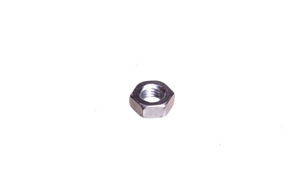
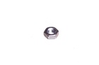
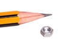

M3 Nut - NU3

Summary
Name: M3 Nut
ID: NUTT-M3-M-STAN-01
Hex ID: NU3
WebPage: https://github.com/oomlout/oomlout-OOMP/wiki/NUTT-M3-M-STAN-01
Short URL: http://oom.lt/NU3
Revision History: https://github.com/oomlout/oomlout-OOMP/blob/master/parts/NUTT-M3-M-STAN-01/
| Type |
Size |
Color |
Description |
Index |
NUTT
Nut |
M3
M3 |
M
Metal |
STAN
|
01
|
Images


About
This part is awaiting a description.
Specifications
| Info |
Value |
| Type |
Nut |
| Size |
M3 |
| Color |
Metal |
Extra Details
Spotted a mistake, want to add more? Let us know oomp@oomlout.com
All images and resources are licensed [CC BY-SA] unless otherwise stated (ie. the datasheets)